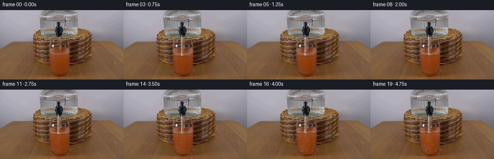
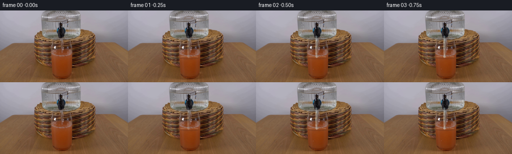
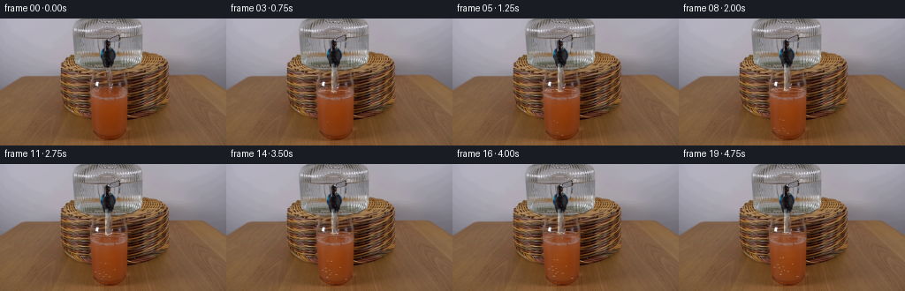
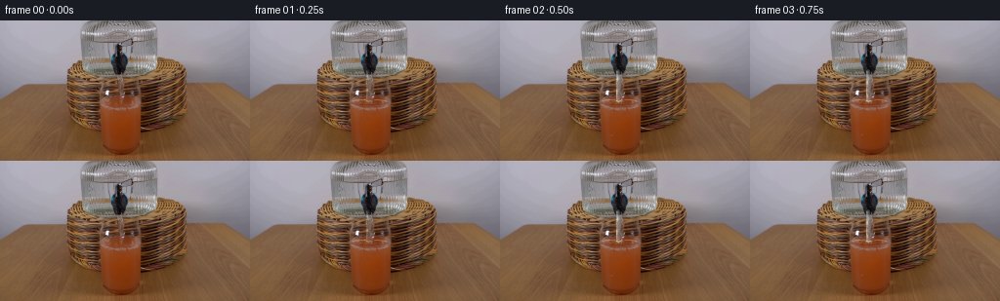

CODING AGENTS AS PIXEL WORLD MODELS
traex/GPT-5.6-Sol · 0185
点击播放 · 原生 RGB 像素
逐轮保存的候选
回放视频、检查图与代码变化。
每份候选均可单独播放。实际图片检查记录在下方工具轨迹中。
候选 01播放与检查图
点击播放 · 原生 RGB 像素


展开代码变化
--- 上一保存版本
+++ 本次保存版本
@@ -0,0 +1,210 @@
+from pathlib import Path
+import numpy as np
+import cv2
+from PIL import Image
+import artifact_io
+
+# Analytic, deterministic animation composited over the supplied locked-off frame.
+ROOT = Path(__file__).resolve().parent
+base_u8 = np.asarray(Image.open(ROOT / "first_frame.png").convert("RGB"), dtype=np.uint8)
+H, W = base_u8.shape[:2]
+assert (H, W) == (144, 256)
+base = base_u8.astype(np.float32)
+SS = 4
+
+
+def ease01(x):
+ x = np.clip(x, 0.0, 1.0)
+ return x * x * (3.0 - 2.0 * x)
+
+
+def composite(im, color, mask):
+ """Alpha composite a constant RGB color through a float mask."""
+ a = np.clip(mask, 0.0, 1.0)[..., None]
+ return im * (1.0 - a) + np.asarray(color, np.float32) * a
+
+
+def aa_polyline(points, width, closed=False):
+ canvas = np.zeros((H * SS, W * SS), np.uint8)
+ p = np.round(np.asarray(points, np.float32) * SS).astype(np.int32)
+ if closed:
+ cv2.polylines(canvas, [p], True, 255, max(1, int(round(width * SS))), cv2.LINE_AA)
+ else:
+ cv2.polylines(canvas, [p], False, 255, max(1, int(round(width * SS))), cv2.LINE_AA)
+ return cv2.resize(canvas, (W, H), interpolation=cv2.INTER_AREA).astype(np.float32) / 255.0
+
+
+def aa_ellipse(cx, cy, rx, ry, width=0.7, start=0, end=360):
+ canvas = np.zeros((H * SS, W * SS), np.uint8)
+ cv2.ellipse(canvas, (int(round(cx * SS)), int(round(cy * SS))),
+ (max(1, int(round(rx * SS))), max(1, int(round(ry * SS)))),
+ 0, start, end, 255, max(1, int(round(width * SS))), cv2.LINE_AA)
+ return cv2.resize(canvas, (W, H), interpolation=cv2.INTER_AREA).astype(np.float32) / 255.0
+
+
+def glass_sides(y):
+ # Interior boundaries follow the tapered tumbler visible in the source.
+ q = np.maximum(0.0, y - 84.0)
+ return 102.0 + 0.090 * q, 143.5 - 0.125 * q
+
+
+def fluid_mask(level, bottom=136.5):
+ yy, xx = np.mgrid[0:H, 0:W].astype(np.float32)
+ left, right = glass_sides(yy)
+ # One-pixel feathering keeps the original glass rim and edge highlights intact.
+ side = np.clip((xx - left) / 1.15, 0, 1) * np.clip((right - xx) / 1.15, 0, 1)
+ top = np.clip((yy + 0.5 - level) / 1.0, 0, 1)
+ bot = np.clip((bottom - yy) / 1.2, 0, 1)
+ return side * top * bot
+
+
+def jet_center(y, phase, strength):
+ # A coherent stream: fixed at the tap, only faintly sinuous lower down.
+ travel = np.clip((y - 53.5) / 40.0, 0, 1)
+ return 121.1 + strength * travel * (0.34 * np.sin(phase + y * 0.21)
+ + 0.11 * np.sin(phase * 1.7 + y * 0.53))
+
+
+def draw_bubble(im, x, y, r, alpha=1.0):
+ if y < 0 or y >= H:
+ return im
+ # A tiny dark lower rim and bright upper-left crescent read as trapped air.
+ dark = aa_ellipse(x, y, r, max(.55, r * .72), .55)
+ im = composite(im, (83, 48, 27), dark * (0.24 * alpha))
+ hi = aa_ellipse(x - .18, y - .18, max(.45, r * .68), max(.35, r * .48), .45, 185, 355)
+ return composite(im, (241, 215, 176), hi * (0.55 * alpha))
+
+
+frames = [base_u8.copy()]
+yy, xx = np.mgrid[0:H, 0:W].astype(np.float32)
+rng = np.random.default_rng(185)
+# Stable bubble parameters (motion changes, but identities do not flicker randomly).
+bubble_x = rng.uniform(108.0, 138.0, 13)
+bubble_y0 = rng.uniform(111.0, 133.0, 13)
+bubble_r = rng.uniform(.55, 1.15, 13)
+bubble_birth = np.arange(13) + 2
+
+for i in range(1, 20):
+ im = base.copy()
+ time = i / 4.0
+ phase = i * 0.78
+ flow = ease01(i / 2.2)
+ rise = ease01((i - 0.5) / 18.5)
+ level = 94.0 - 5.4 * rise
+
+ # ----- Rising and gradually diluted grapefruit juice -----
+ fm = fluid_mask(level)
+ oldm = fluid_mask(94.0)
+ newm = np.clip(fm - oldm, 0, 1)
+
+ # Extend the existing photographic juice texture into only the newly occupied rows.
+ # Samples come from a few pixels beneath the old meniscus and are gently water-softened.
+ texture = base.copy()
+ for y in range(max(0, int(np.floor(level)) - 1), 96):
+ src_y = min(119, int(96 + (94.0 - y) * 0.72))
+ shift = int(round(0.8 * np.sin(phase * .45 + y * .37)))
+ texture[y] = np.roll(base[src_y], shift, axis=0)
+ texture = texture * 0.86 + np.array([183, 116, 72], np.float32) * 0.14
+ a_new = (0.77 * newm)[..., None]
+ im = im * (1.0 - a_new) + texture * a_new
+
+ # The incoming clear-water plume wanders downward and broadens, producing realistic
+ # pale, low-saturation mixing rather than recoloring the entire drink uniformly.
+ depth = np.clip(yy - level, 0, None)
+ center = 121.1 + 1.35 * np.sin(depth * .19 - phase * .62) + .45 * np.sin(depth * .47 + phase)
+ width = 2.0 + depth * (0.105 + 0.055 * rise)
+ plume = np.exp(-0.5 * ((xx - center) / np.maximum(width, .8)) ** 2)
+ plume *= np.exp(-depth / 49.0) * fm
+ plume *= (0.06 + 0.17 * rise) * (0.80 + .20 * np.sin(depth * .46 + phase) ** 2)
+ im = composite(im, (188, 133, 91), plume)
+
+ # A much weaker diffuse dilution halo builds over the five seconds.
+ halo_center = 122.0 + .7 * np.sin(phase * .35)
+ halo = np.exp(-0.5 * ((xx - halo_center) / (8.0 + 6.0 * rise)) ** 2)
+ halo *= fm * (0.030 * rise)
+ im = composite(im, (174, 119, 79), halo)
+
+ # Moving meniscus: shadow under the far edge, warm body, and broken specular near edge.
+ # The ellipse is slightly clipped by the glass side mask in compositing.
+ side_at_level = fluid_mask(level - .25) + fluid_mask(level + .75)
+ men_shadow = aa_ellipse(122.2, level + .35, 19.4, 2.65, .75, 4, 176)
+ im = composite(im, (72, 37, 24), men_shadow * 0.28 * np.clip(side_at_level, 0, 1))
+ men_warm = aa_ellipse(122.2, level, 19.1, 2.45, .70, 184, 354)
+ im = composite(im, (208, 133, 77), men_warm * 0.30 * np.clip(side_at_level, 0, 1))
+ # Highlights broken into two curved stretches to avoid a synthetic complete oval.
+ hi1 = aa_ellipse(122.1, level - .10, 18.7, 2.25, .55, 202, 258)
+ hi2 = aa_ellipse(122.1, level - .10, 18.7, 2.25, .55, 287, 339)
+ im = composite(im, (237, 205, 165), (hi1 + hi2) * (0.33 + .06 * np.sin(phase)))
+
+ # Ripples radiate from the jet's impact. Their radius cycles while their opacity fades.
+ cyc = (i % 5) / 5.0
+ for k in range(2):
+ u = (cyc + k * .46) % 1.0
+ rx = 2.3 + 8.0 * u
+ ripple = aa_ellipse(121.2, level - .15, rx, .55 + .55 * u, .48, 182, 358)
+ im = composite(im, (232, 211, 183), ripple * ((1-u) * 0.34 * flow))
+
+ # Entrained pin-bubbles rise slowly inside the juice. Keep these sparse and subpixel.
+ for k in range(len(bubble_x)):
+ age = i - bubble_birth[k]
+ if age < 0:
+ continue
+ # Re-seed vertically after reaching the surface, giving continuous gentle mixing.
+ yb = level + 3.0 + ((bubble_y0[k] - level - age * (0.65 + .09*(k % 3)))
+ % max(5.0, (134.0 - level)))
+ if yb < 133.8:
+ wobble = .7 * np.sin(.53 * age + k * 1.7)
+ im = draw_bubble(im, bubble_x[k] + wobble, yb, bubble_r[k], .42 + .22 * rise)
+
+ # ----- Clear water falling from the beverage dispenser -----
+ y0 = 52.0
+ y1 = level - .35
+ ys = np.linspace(y0, y1, max(8, int((y1-y0) * 1.4)))
+ centers = np.array([jet_center(y, phase, flow) for y in ys])
+ path = np.column_stack([centers, ys])
+
+ # Refraction first: a one-pixel, vertically flowing displacement of the background.
+ stream_outer = aa_polyline(path, 4.1)
+ shift_y = 1 if (i % 3) else 2
+ refr = np.roll(base, shift_y, axis=0)
+ ra = (stream_outer * 0.18 * flow)[..., None]
+ im = im * (1-ra) + refr * ra
+
+ # Cool transparent body, a darker far edge, and a bright narrow near-edge glint.
+ im = composite(im, (178, 207, 213), stream_outer * (0.18 * flow))
+ center_mask = aa_polyline(path, 1.65)
+ im = composite(im, (220, 231, 229), center_mask * (0.18 * flow))
+ left_path = np.column_stack([centers - 1.40, ys])
+ right_path = np.column_stack([centers + 1.48, ys])
+ left_edge = aa_polyline(left_path, .58)
+ right_edge = aa_polyline(right_path, .52)
+ im = composite(im, (241, 247, 241), left_edge * (0.48 * flow))
+ im = composite(im, (78, 124, 139), right_edge * (0.18 * flow))
+
+ # Short glints slide downward along the stream, revealing continuous flow in a fixed shot.
+ for j in range(3):
+ a = ((i * 3.15 + j * 12.7) % max(8.0, y1-y0-4.0)) + y0 + 1
+ b = min(a + 3.1 + .7 * (j % 2), y1 - .7)
+ if b > a:
+ gy = np.linspace(a, b, 5)
+ gx = np.array([jet_center(y, phase, flow) - 1.18 for y in gy])
+ glint = aa_polyline(np.column_stack([gx, gy]), .44)
+ im = composite(im, (252, 251, 240), glint * (0.50 * flow))
+
+ # Tiny impact crown and occasional droplets stay physically small at this resolution.
+ crown_l = aa_polyline([(121.0, level), (119.5, level-1.25), (118.7, level-.65)], .52)
+ crown_r = aa_polyline([(121.2, level), (123.0, level-1.05), (124.0, level-.45)], .52)
+ im = composite(im, (238, 238, 221), (crown_l + crown_r) * 0.40 * flow)
+ if i % 4 in (1, 2):
+ dx = -3.2 if i % 4 == 1 else 3.5
+ drop = aa_ellipse(121.1 + dx, level - 2.1 - .35*(i % 2), .42, .62, .55)
+ im = composite(im, (230, 238, 229), drop * 0.42 * flow)
+
+ frames.append(np.clip(np.rint(im), 0, 255).astype(np.uint8))
+
+frames = np.stack(frames, axis=0)
+# Contract guarantee: no operation may alter the supplied initial frame.
+frames[0] = base_u8
+assert frames.shape == (20, 144, 256, 3) and frames.dtype == np.uint8
+assert np.array_equal(frames[0], base_u8)
+artifact_io.save(frames, ROOT)
候选 02播放与检查图
点击播放 · 原生 RGB 像素


展开代码变化
--- 上一保存版本
+++ 本次保存版本
@@ -90,18 +90,21 @@
phase = i * 0.78
flow = ease01(i / 2.2)
rise = ease01((i - 0.5) / 18.5)
- level = 94.0 - 5.4 * rise
+ # The supplied photograph's orange surface lies near y=83; filling raises it by
+ # roughly five pixels, a restrained volume change for this short demonstration.
+ old_level = 83.5
+ level = old_level - 5.4 * rise
# ----- Rising and gradually diluted grapefruit juice -----
fm = fluid_mask(level)
- oldm = fluid_mask(94.0)
+ oldm = fluid_mask(old_level)
newm = np.clip(fm - oldm, 0, 1)
# Extend the existing photographic juice texture into only the newly occupied rows.
# Samples come from a few pixels beneath the old meniscus and are gently water-softened.
texture = base.copy()
- for y in range(max(0, int(np.floor(level)) - 1), 96):
- src_y = min(119, int(96 + (94.0 - y) * 0.72))
+ for y in range(max(0, int(np.floor(level)) - 1), 86):
+ src_y = min(119, int(88 + (old_level - y) * 0.72))
shift = int(round(0.8 * np.sin(phase * .45 + y * .37)))
texture[y] = np.roll(base[src_y], shift, axis=0)
texture = texture * 0.86 + np.array([183, 116, 72], np.float32) * 0.14
可观测工具轨迹
实际执行的命令与返回图片。
命令 1exit 0
/bin/bash -lc "cat prompt.txt && printf '\\n---RULES---\\n' && cat GENERATION_RULES.md"
命令 2exit 0
/bin/bash -lc "find . -maxdepth 2 -type f -printf '%p\\n' | sort && printf '\\n---TOOLS---\\n' && command -v ffmpeg || true; command -v python3 || true"
命令 3exit 0
/bin/bash -lc "python3 - <<'PY'
from PIL import Image
import numpy as np
im=np.array(Image.open('first_frame.png').convert('RGB'))
print(im.shape, im.min(),im.max(), np.mean(im,axis=(0,1)), np.std(im,axis=(0,1)))
# color quantize and print ANSI? no visual tools. list prevalent quantized colors
q=(im//16)*16
u,c=np.unique(q.reshape(-1,3),axis=0,return_counts=True)
for j in np.argsort(c)[-30:][::-1]: print(c[j],u[j])
PY"命令 4exit 0
/bin/bash -lc "cat artifact_io.py && python3 - <<'PY'
import cv2, numpy as np
from PIL import Image
im=np.array(Image.open('first_frame.png').convert('RGB'))
g=cv2.cvtColor(im,cv2.COLOR_RGB2GRAY)
# edges resize max pooled 4x4
ed=cv2.Canny(g,50,120)
# edge occupancy 4x4
for y in range(0,144,4):
s=''
for x in range(0,256,4):
v=ed[y:y+4,x:x+4].mean()/255
s += ' ' if v<.04 else '.' if v<.12 else '+' if v<.25 else '#' if v<.45 else '@'
print(s.rstrip())
print('column edge sums top', sorted(enumerate(ed.sum(0)//255),key=lambda z:z[1],reverse=True)[:20])
print('row edge sums top', sorted(enumerate(ed.sum(1)//255),key=lambda z:z[1],reverse=True)[:20])
PY"命令 5exit 0
/bin/bash -lc "python3 - <<'PY'
from PIL import Image
import numpy as np, colorsys
im=np.array(Image.open('first_frame.png').convert('RGB'))
# each 8x8 median, classify by hsv / rgb
chars=[]
for y in range(0,144,8):
s=''
for x in range(0,256,8):
p=np.median(im[y:y+8,x:x+8],axis=(0,1)); r,g,b=p
h,st,v=colorsys.rgb_to_hsv(*(p/255))
# chars semantic intensity/color
if v<.20:c='K'
elif st<.08: c='w' if v>.75 else 'g' if v>.5 else 'd'
elif st<.20:c='W' if v>.75 else 'G' if v>.5 else 'D'
elif h<.035 or h>.95:c='R' if st>.55 else 'r'
elif h<.10:c='O' if st>.55 else 'o'
elif h<.18:c='Y' if st>.55 else 'y'
elif h<.45:c='C'
elif h<.70:c='B'
else:c='M'
s+=c
print(f'{y:3}',s)
print('legend K black, d/D dark gray low/high sat, g/G mid gray, w/W light; R red O orange Y yellow C green/cyan B blue M magenta; lower weak sat')
# samples every 16 center average exact
for y in range(8,144,16):
print('y',y,' '.join('%02x%02x%02x'%tuple(np.mean(im[max(0,y-4):y+4,x-4:x+4],axis=(0,1)).astype(int)) for x in range(8,256,16)))
PY"命令 6exit 0
/bin/bash -lc "python3 - <<'PY'
import cv2,numpy as np
from PIL import Image
im=np.array(Image.open('first_frame.png').convert('RGB')); g=cv2.cvtColor(im,cv2.COLOR_RGB2GRAY)
for t in [30,50,80,120]:
e=cv2.Canny(g,t,t*2)
lines=cv2.HoughLinesP(e,1,np.pi/180,threshold=18,minLineLength=12,maxLineGap=3)
print('\\nthreshold',t)
if lines is not None:
out=[]
for q in lines[:,0]:
x1,y1,x2,y2=map(int,q); L=((x2-x1)**2+(y2-y1)**2)**.5
out.append((round(L,1),(x1,y1,x2,y2)))
print(sorted(out,reverse=True)[:60])
# contours canny
c,_=cv2.findContours(cv2.Canny(g,50,100),cv2.RETR_LIST,cv2.CHAIN_APPROX_SIMPLE)
print('contours', sorted([(cv2.contourArea(q),cv2.boundingRect(q)) for q in c],reverse=True)[:30])
PY"命令 7exit 0
/bin/bash -lc "python3 - <<'PY'
from PIL import Image
import numpy as np
im=np.array(Image.open('first_frame.png').convert('RGB')).astype(float)
# bg model per row robust from x ranges 10:60 and 220:245, median; object difference
for scale in [4,2]:
print('\\nSCALE',scale)
for y in range(0,144,scale):
s=''
for x in range(0,256,scale):
# median reference in neighborhood row from side depending table gradient use symmetric x? fit linear each channel using outer cols
yy=slice(y,min(y+scale,144)); xx=slice(x,min(x+scale,256))
d=[]
for yi in range(y,min(y+scale,144)):
# interpolate between medians nearby left/right by x
L=np.median(im[yi,10:55],axis=0); R=np.median(im[yi,215:250],axis=0)
ref=L+(R-L)*x/255
d.append(np.mean(np.abs(im[yi,x:min(x+scale,256)]-ref)))
z=np.mean(d)
s += ' ' if z<8 else '.' if z<15 else '+' if z<28 else '#' if z<48 else '@'
print(f'{y:3} {s.rstrip()}')
PY"命令 8exit 0
/bin/bash -lc "python3 - <<'PY'
import cv2,numpy as np
from PIL import Image
im=np.array(Image.open('first_frame.png').convert('RGB')); g=cv2.cvtColor(im,cv2.COLOR_RGB2GRAY)
for region in [(55,35,130,120),(120,30,205,125),(60,0,175,70)]:
x0,y0,x1,y1=region; e=cv2.Canny(g,80,160)
print('\\nREGION',region)
# every pixel, 2x2 max, include axes
for y in range(y0,y1,2):
print(f'{y:3}', ''.join('#' if e[y:y+2,x:x+2].any() else ' ' for x in range(x0,x1,2)))
PY"命令 9exit 0
/bin/bash -lc "python3 - <<'PY'
from PIL import Image
import numpy as np, cv2
im=np.array(Image.open('first_frame.png').convert('RGB'))
hsv=cv2.cvtColor(im,cv2.COLOR_RGB2HSV)
# block stats 8x8 in scene x56-208,y32-128: print mean RGB, HSV at candidate blocks selected by sat/high red excess
for y in range(32,128,4):
arr=[]
for x in range(56,208,4):
p=np.mean(im[y:y+4,x:x+4],(0,1)); h=np.mean(hsv[y:y+4,x:x+4,0]); s=np.mean(hsv[y:y+4,x:x+4,1]); v=np.mean(hsv[y:y+4,x:x+4,2])
# red excess normalized and saturation
if s>80 and p[0]>p[1]*1.25: c='R'
elif s>70 and h<20: c='O'
elif s>55 and h<30:c='o'
elif p.mean()<45:c='K'
elif p.mean()>165 and s<35:c='W'
elif s<30:c='.'
elif s<55:c='g'
else:c='x'
arr.append(c)
print(f'{y:3}', ''.join(arr))
print('\\nstrong red-excess blocks')
A=[]
for y in range(144):
for x in range(256):
r,g,b=map(int,im[y,x]); score=r-(g+b)/2
if score>80:A.append((score,x,y,(r,g,b)))
print(sorted(A,reverse=True)[:100])
PY"命令 10exit 0
/bin/bash -lc "python3 - <<'PY'
import cv2,numpy as np
from PIL import Image
im=np.array(Image.open('first_frame.png').convert('RGB')).astype(float)
g=cv2.cvtColor(im.astype(np.uint8),cv2.COLOR_RGB2GRAY)
gx=np.abs(cv2.Sobel(g,cv2.CV_32F,1,0,ksize=3)); gy=np.abs(cv2.Sobel(g,cv2.CV_32F,0,1,ksize=3))
print('vertical edge strength sums by x y80:140')
for x in range(55,201):
z=gx[80:141,x].sum()
if z>2500: print(x,round(z))
print('horizontal edge strength sums by y x80:180')
for y in range(50,144):
z=gy[y,80:181].sum()
if z>4500: print(y,round(z))
# identify per y strongest x positions gx
for y in range(78,142,2):
q=np.mean(gx[y:y+2],axis=0); ids=np.argsort(q[60:201])[-12:]+60
print(y,[(int(x),round(float(q[x]))) for x in sorted(ids)])
PY"命令 11exit 0
/bin/bash -lc "python3 - <<'PY'
from PIL import Image
import numpy as np
im=np.array(Image.open('first_frame.png').convert('RGB'))
for y in [0,10,20,30,35,40,45,50,55,60,63,65,70,75,80,83,85,90,95,100,105,110,115,120,130,138]:
print('\\ny=',y)
for x in range(50,211,5):
p=np.mean(im[max(0,y-1):y+2,x:x+5],(0,1)).astype(int)
print(f'{x}:{p[0]:02x}{p[1]:02x}{p[2]:02x}',end=' ')
print()
PY"命令 12exit 0
/bin/bash -lc "cat > generate.py <<'PY'
from pathlib import Path
import numpy as np
import cv2
from PIL import Image
import artifact_io
# Analytic, deterministic animation composited over the supplied locked-off frame.
ROOT = Path(__file__).resolve().parent
base_u8 = np.asarray(Image.open(ROOT / \"first_frame.png\").convert(\"RGB\"), dtype=np.uint8)
H, W = base_u8.shape[:2]
assert (H, W) == (144, 256)
base = base_u8.astype(np.float32)
SS = 4
def ease01(x):
x = np.clip(x, 0.0, 1.0)
return x * x * (3.0 - 2.0 * x)
def composite(im, color, mask):
\"\"\"Alpha composite a constant RGB color through a float mask.\"\"\"
a = np.clip(mask, 0.0, 1.0)[..., None]
return im * (1.0 - a) + np.asarray(color, np.float32) * a
def aa_polyline(points, width, closed=False):
canvas = np.zeros((H * SS, W * SS), np.uint8)
p = np.round(np.asarray(points, np.float32) * SS).astype(np.int32)
if closed:
cv2.polylines(canvas, [p], True, 255, max(1, int(round(width * SS))), cv2.LINE_AA)
else:
cv2.polylines(canvas, [p], False, 255, max(1, int(round(width * SS))), cv2.LINE_AA)
return cv2.resize(canvas, (W, H), interpolation=cv2.INTER_AREA).astype(np.float32) / 255.0
def aa_ellipse(cx, cy, rx, ry, width=0.7, start=0, end=360):
canvas = np.zeros((H * SS, W * SS), np.uint8)
cv2.ellipse(canvas, (int(round(cx * SS)), int(round(cy * SS))),
(max(1, int(round(rx * SS))), max(1, int(round(ry * SS)))),
0, start, end, 255, max(1, int(round(width * SS))), cv2.LINE_AA)
return cv2.resize(canvas, (W, H), interpolation=cv2.INTER_AREA).astype(np.float32) / 255.0
def glass_sides(y):
# Interior boundaries follow the tapered tumbler visible in the source.
q = np.maximum(0.0, y - 84.0)
return 102.0 + 0.090 * q, 143.5 - 0.125 * q
def fluid_mask(level, bottom=136.5):
yy, xx = np.mgrid[0:H, 0:W].astype(np.float32)
left, right = glass_sides(yy)
# One-pixel feathering keeps the original glass rim and edge highlights intact.
side = np.clip((xx - left) / 1.15, 0, 1) * np.clip((right - xx) / 1.15, 0, 1)
top = np.clip((yy + 0.5 - level) / 1.0, 0, 1)
bot = np.clip((bottom - yy) / 1.2, 0, 1)
return side * top * bot
def jet_center(y, phase, strength):
# A coherent stream: fixed at the tap, only faintly sinuous lower down.
travel = np.clip((y - 53.5) / 40.0, 0, 1)
return 121.1 + strength * travel * (0.34 * np.sin(phase + y * 0.21)
+ 0.11 * np.sin(phase * 1.7 + y * 0.53))
def draw_bubble(im, x, y, r, alpha=1.0):
if y < 0 or y >= H:
return im
# A tiny dark lower rim and bright upper-left crescent read as trapped air.
dark = aa_ellipse(x, y, r, max(.55, r * .72), .55)
im = composite(im, (83, 48, 27), dark * (0.24 * alpha))
hi = aa_ellipse(x - .18, y - .18, max(.45, r * .68), max(.35, r * .48), .45, 185, 355)
return composite(im, (241, 215, 176), hi * (0.55 * alpha))
frames = [base_u8.copy()]
yy, xx = np.mgrid[0:H, 0:W].astype(np.float32)
rng = np.random.default_rng(185)
# Stable bubble parameters (motion changes, but identities do not flicker randomly).
bubble_x = rng.uniform(108.0, 138.0, 13)
bubble_y0 = rng.uniform(111.0, 133.0, 13)
bubble_r = rng.uniform(.55, 1.15, 13)
bubble_birth = np.arange(13) + 2
for i in range(1, 20):
im = base.copy()
time = i / 4.0
phase = i * 0.78
flow = ease01(i / 2.2)
rise = ease01((i - 0.5) / 18.5)
level = 94.0 - 5.4 * rise
# ----- Rising and gradually diluted grapefruit juice -----
fm = fluid_mask(level)
oldm = fluid_mask(94.0)
newm = np.clip(fm - oldm, 0, 1)
# Extend the existing photographic juice texture into only the newly occupied rows.
# Samples come from a few pixels beneath the old meniscus and are gently water-softened.
texture = base.copy()
for y in range(max(0, int(np.floor(level)) - 1), 96):
src_y = min(119, int(96 + (94.0 - y) * 0.72))
shift = int(round(0.8 * np.sin(phase * .45 + y * .37)))
texture[y] = np.roll(base[src_y], shift, axis=0)
texture = texture * 0.86 + np.array([183, 116, 72], np.float32) * 0.14
a_new = (0.77 * newm)[..., None]
im = im * (1.0 - a_new) + texture * a_new
# The incoming clear-water plume wanders downward and broadens, producing realistic
# pale, low-saturation mixing rather than recoloring the entire drink uniformly.
depth = np.clip(yy - level, 0, None)
center = 121.1 + 1.35 * np.sin(depth * .19 - phase * .62) + .45 * np.sin(depth * .47 + phase)
width = 2.0 + depth * (0.105 + 0.055 * rise)
plume = np.exp(-0.5 * ((xx - center) / np.maximum(width, .8)) ** 2)
plume *= np.exp(-depth / 49.0) * fm
plume *= (0.06 + 0.17 * rise) * (0.80 + .20 * np.sin(depth * .46 + phase) ** 2)
im = composite(im, (188, 133, 91), plume)
# A much weaker diffuse dilution halo builds over the five seconds.
halo_center = 122.0 + .7 * np.sin(phase * .35)
halo = np.exp(-0.5 * ((xx - halo_center) / (8.0 + 6.0 * rise)) ** 2)
halo *= fm * (0.030 * rise)
im = composite(im, (174, 119, 79), halo)
# Moving meniscus: shadow under the far edge, warm body, and broken specular near edge.
# The ellipse is slightly clipped by the glass side mask in compositing.
side_at_level = fluid_mask(level - .25) + fluid_mask(level + .75)
men_shadow = aa_ellipse(122.2, level + .35, 19.4, 2.65, .75, 4, 176)
im = composite(im, (72, 37, 24), men_shadow * 0.28 * np.clip(side_at_level, 0, 1))
men_warm = aa_ellipse(122.2, level, 19.1, 2.45, .70, 184, 354)
im = composite(im, (208, 133, 77), men_warm * 0.30 * np.clip(side_at_level, 0, 1))
# Highlights broken into two curved stretches to avoid a synthetic complete oval.
hi1 = aa_ellipse(122.1, level - .10, 18.7, 2.25, .55, 202, 258)
hi2 = aa_ellipse(122.1, level - .10, 18.7, 2.25, .55, 287, 339)
im = composite(im, (237, 205, 165), (hi1 + hi2) * (0.33 + .06 * np.sin(phase)))
# Ripples radiate from the jet's impact. Their radius cycles while their opacity fades.
cyc = (i % 5) / 5.0
for k in range(2):
u = (cyc + k * .46) % 1.0
rx = 2.3 + 8.0 * u
ripple = aa_ellipse(121.2, level - .15, rx, .55 + .55 * u, .48, 182, 358)
im = composite(im, (232, 211, 183), ripple * ((1-u) * 0.34 * flow))
# Entrained pin-bubbles rise slowly inside the juice. Keep these sparse and subpixel.
for k in range(len(bubble_x)):
age = i - bubble_birth[k]
if age < 0:
continue
# Re-seed vertically after reaching the surface, giving continuous gentle mixing.
yb = level + 3.0 + ((bubble_y0[k] - level - age * (0.65 + .09*(k % 3)))
% max(5.0, (134.0 - level)))
if yb < 133.8:
wobble = .7 * np.sin(.53 * age + k * 1.7)
im = draw_bubble(im, bubble_x[k] + wobble, yb, bubble_r[k], .42 + .22 * rise)
# ----- Clear water falling from the beverage dispenser -----
y0 = 52.0
y1 = level - .35
ys = np.linspace(y0, y1, max(8, int((y1-y0) * 1.4)))
centers = np.array([jet_center(y, phase, flow) for y in ys])
path = np.column_stack([centers, ys])
# Refraction first: a one-pixel, vertically flowing displacement of the background.
stream_outer = aa_polyline(path, 4.1)
shift_y = 1 if (i % 3) else 2
refr = np.roll(base, shift_y, axis=0)
ra = (stream_outer * 0.18 * flow)[..., None]
im = im * (1-ra) + refr * ra
# Cool transparent body, a darker far edge, and a bright narrow near-edge glint.
im = composite(im, (178, 207, 213), stream_outer * (0.18 * flow))
center_mask = aa_polyline(path, 1.65)
im = composite(im, (220, 231, 229), center_mask * (0.18 * flow))
left_path = np.column_stack([centers - 1.40, ys])
right_path = np.column_stack([centers + 1.48, ys])
left_edge = aa_polyline(left_path, .58)
right_edge = aa_polyline(right_path, .52)
im = composite(im, (241, 247, 241), left_edge * (0.48 * flow))
im = composite(im, (78, 124, 139), right_edge * (0.18 * flow))
# Short glints slide downward along the stream, revealing continuous flow in a fixed shot.
for j in range(3):
a = ((i * 3.15 + j * 12.7) % max(8.0, y1-y0-4.0)) + y0 + 1
b = min(a + 3.1 + .7 * (j % 2), y1 - .7)
if b > a:
gy = np.linspace(a, b, 5)
gx = np.array([jet_center(y, phase, flow) - 1.18 for y in gy])
glint = aa_polyline(np.column_stack([gx, gy]), .44)
im = composite(im, (252, 251, 240), glint * (0.50 * flow))
# Tiny impact crown and occasional droplets stay physically small at this resolution.
crown_l = aa_polyline([(121.0, level), (119.5, level-1.25), (118.7, level-.65)], .52)
crown_r = aa_polyline([(121.2, level), (123.0, level-1.05), (124.0, level-.45)], .52)
im = composite(im, (238, 238, 221), (crown_l + crown_r) * 0.40 * flow)
if i % 4 in (1, 2):
dx = -3.2 if i % 4 == 1 else 3.5
drop = aa_ellipse(121.1 + dx, level - 2.1 - .35*(i % 2), .42, .62, .55)
im = composite(im, (230, 238, 229), drop * 0.42 * flow)
frames.append(np.clip(np.rint(im), 0, 255).astype(np.uint8))
frames = np.stack(frames, axis=0)
# Contract guarantee: no operation may alter the supplied initial frame.
frames[0] = base_u8
assert frames.shape == (20, 144, 256, 3) and frames.dtype == np.uint8
assert np.array_equal(frames[0], base_u8)
artifact_io.save(frames, ROOT)
PY
python3 generate.py
python3 - <<'PY'
from PIL import Image
import numpy as np
z=np.load('pixels.npz')['pixels']
a=np.array(Image.open('first_frame.png').convert('RGB'))
b=np.array(Image.open('frames/00.png').convert('RGB'))
print('saved',z.shape,z.dtype,'frame0 exact',np.array_equal(a,b))
for i in range(1,20):
c=np.array(Image.open(f'frames/{i:02d}.png').convert('RGB'))
d=np.abs(c.astype(int)-a.astype(int)); print(i,np.sum(np.any(d,2)),round(d.mean(),3),d.max())
PY"命令 13exit 0
/bin/bash -lc "python3 generate.py && python3 - <<'PY'
from PIL import Image
import numpy as np
A=np.array(Image.open('first_frame.png'))
for i in [1,5,10,15,19]:
B=np.array(Image.open(f'frames/{i:02d}.png')); d=np.abs(B.astype(int)-A.astype(int)); ys,xs=np.where(np.any(d,2)); print(i,len(xs),(xs.min(),ys.min(),xs.max(),ys.max()),d.mean(),d.max())
PY"保存候选 2 份；完成命令 13 次；可验证图片返回 0 张。原始 API 响应与完整日志保留在本地。